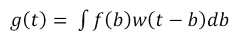
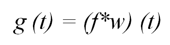
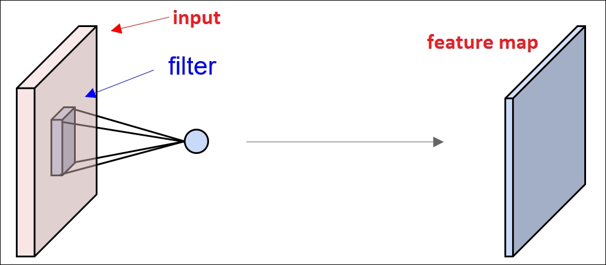
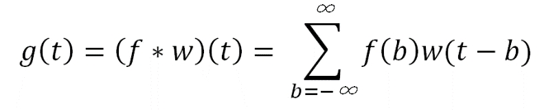
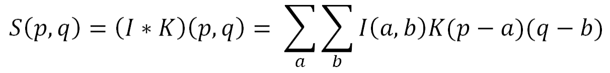

"The question of whether a computer can think is no more interesting than the question of whether a submarine can swim." | ||
| --Edsger W. Dijkstra | ||
Convolutional neural network (CNN)--doesn't it give an uncanny feeling about the combination of mathematics and biology with some negligible amount of computer science added? However, these type of networks have been some of the most dominant and powerful architectures in the field of computer vision. CNN started to gain its popularity after 2012, when there were huge improvements in the precision of classification, credit to some pioneer in the field of deep learning. Ever since then, a bunch of high-tech companies have been using deep CNN for various services. Amazon uses CNN for their product recommendations, Google uses it for their photo search, and Facebook primarily uses it for its automatic tagging algorithms.
CNN [89] is a type of feed-forward neural network comprised of neurons, which have learnable weights and biases. These types of networks are basically used to process data, having the grid-like topology form. CNNs, as the name suggests, are a type of neural network where, unlike the general matrix multiplication, a special type of linear mathematical operation, convolution, is used in at least one of the subsequent layers. The architecture of CNN is designed to take the benefit of input with multidimensional structure. These include the 2D structure of an input image, speech signal, or even one-dimensional time series data. With all these advantages, CNN has been really successful with many practical applications. CNN is thus tremendously successful, specifically in fields such as natural language processing, recommender systems, image recognition, and video recognition.
In this chapter, we will discuss the building block of CNN in-depth. We will initially discuss what convolution is and the need of convolution operations in the neural network. Under that topic, we will also address pooling operation, which is the most important component of CNN. The next topic of this chapter will point out the major challenges of CNN while dealing with large-scale data. The last part of this chapter will help the reader to learn how to design CNN using Deeplearning4j.
The main topics of the chapter are listed as follows:
To understand the concept of convolution, let us take an example to determine the position of a lost mobile phone with the help of a laser sensor. Let's say the current location of the mobile phone at time t can be given by the laser as f (t). The laser gives different readings of the location for all the values of t. The laser sensors are generally noisy in nature, which is undesirable for this scenario. Therefore, to derive a less noisy measurement of the location of the phone, we need to calculate the average various measurements. Ideally, the more the measurements, the greater the accuracy of the location. Hence, we should undergo a weighted average, which provides more weight to the measurements.
A weighted function can be given by the function w (b), where b denotes the age of the measurement. To derive a new function that will provide a better estimate of the location of the mobile phone, we need to take the average of the weight at every moment.
The new function can be given as follows:

The preceding operation is termed as convolution. The conventional method of representing convolution is denoted by an asterisk or star, '*':

Formally, convolution can be defined as an integral of the product of two functions, where one of the functions is reversed and shifted. Besides, taking the weighted averages, it may also be used for other purposes.
In terms of convolutional network terminology, the function f in our example is referred to as the input and the function w, the second parameter is called the kernel of the operation. The kernel is composed of a number of filters, which will be used on the input to get the output, referred to as feature maps. In a more convenient way, the kernel can be seen as a membrane, which will allow only the desirable features of the input to pass through it. Figure 3.1 shows a pictorial view of the operation:

Figure 3.1: The figure shows a simple representation of a convolutional network where the input has to pass through the kernel to provide the feature map.
In a practical scenario, as our example shows, the laser sensor cannot really provide the measurements at every given instant of time. Ideally, when a computer works on data, it only works at some regular intervals; hence, the time will be discrete. So, the sensor will generally provide the results at some defined interval of time. If we assume that the instrument provides output once/second, then the parameter t will only take integer values. With these assumptions, the functions f and w will only be defined for integer values of t. The modified equation for discrete convolution can now be written as follows:

In case of machine learning or deep learning applications, the inputs are generally a multidimensional array of data, and the kernel uses multidimensional arrays of different parameters taken by the algorithm. The basic assumption is that the values of the functions are non-zero only for a finite set of points for which we store the values, and zero elsewhere. So, the infinite summation can be represented as the summation for a range of a finite number of array elements. For example, for a 2D image I as an input and a corresponding 2D kernel K, the convolution function can be written as follows:

So, with this, you have already got some background of convolution. In the next section of this chapter, we will discuss the application of convolution in a neural network and the building blocks of CNN.